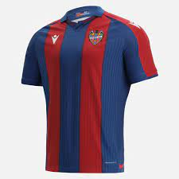

CAMISETA LEVANTE

Descripcion
La nueva camiseta de la primera equipación del Levante para 2022/23 propone una inspiración que llega de lejos, pues el estilo y el diseño de la prenda evocan una camiseta histórica, la del primer ascenso del club a la Primera División en los años sesenta. Como manda la tradición, protagonizan la camiseta las rayas verticales en azul marino-granate. Dentro de las rayas en azul marino, aparecen en los lados exteriores dos rayas más finas en un azul más claro tono sobre tono